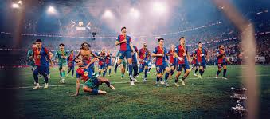

Bienvenido al FC Barcelona
El Fútbol Club Barcelona es uno de los clubes más importantes del mundo, fundado en 1899. Es conocido por su estilo de juego, su cantera y su lema "Més que un club".
Competiciones en las que participa
-
La Liga

Compite cada temporada en la Primera División de España. Uno de los clubes con más títulos.
-
Champions League

Participa regularmente en la UEFA Champions League. Tiene 5 títulos en esta competición.
-
Copa del Rey
Máximo ganador de esta competición con más de 30 títulos.